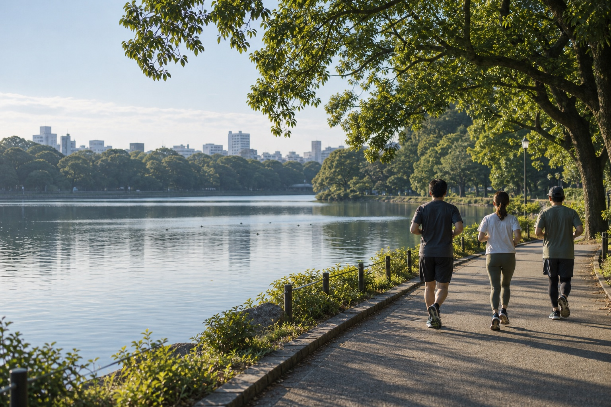

FUKUOKA, OHORI PARK — WEEKEND MORNING
朝にひとつ、
いい約束を。
ひとりでは起きられない朝も、
誰かと走る約束があれば。
土曜または日曜 9:00–10:00 ／ 1回 500円
「また何もしなかった」
で、休日を終えない。
目が覚めて、スマホを開く。
もう少しだけ、とベッドに戻る。
気づけばお昼。気づけば夕方。
本当は、朝から体を動かす気持ちよさを知っている。
仕事以外の時間も、もっと楽しみたいと思っている。
そんなあなたの休日に、
大濠公園で走る約束を、ひとつ。
走る理由は、人それぞれ。
変えたいのは、
タイムより、休日。
起きる理由が、できる。
「明日は早起きしよう」を、「9時に大濠公園で」に。先に予定を入れることで、朝の迷いをひとつ減らします。
「おはよう」から、つながる。
職場以外の友達がほしい。福岡で知り合いを増やしたい。同じ朝、同じ場所で走ることが、会話のきっかけになります。
走ったあとも、休日は続く。
終わるのは朝10時。気になっていたお店へ。読みかけの本を開く。体を動かしたあとは、自分のための時間を。
A SMALL COMMITMENT. A DIFFERENT MORNING.
500円でつくる、
朝の自分との約束。
このコミュニティは、事前決済制です。
当日キャンセルには、参加費の100%がかかります。
朝、目が覚めたときに「行こう」と思える理由を、
前日の自分が用意しておく。
ひとりの意志だけに頼らないための、小さな仕組みです。
当日キャンセルの場合、参加費の返金はありません。体調がすぐれないときは、参加を見合わせてください。前日までのキャンセル・雨天中止・主催者都合の中止時の扱いは、受付開始時にご案内します。
この街に、朝の仲間を。
肩書きより先に、
「一緒に走ろう」。
会社員も、フリーランスも。福岡で暮らし始めた人も。
ここでの共通点は、休日を少しよくしたいという気持ちです。
はじめは走る仲間。何度か会ううちに、
休日に誘える友達になるかもしれない。
知らなかった働き方や、新しい挑戦に出会うかもしれない。
仕事の話も自然な会話のひとつ。
出会いを急がず、お互いのペースを大切にします。
人とのつながりを楽しむ場です。営業や勧誘を目的とした参加はご遠慮ください。
04 — YOUR MORNING
走る。それから、
好きな一日を。
朝の1時間を、一緒に過ごす。
こんな流れを予定しています。
- MEET
大濠公園で、おはよう。
集合したら、まずはご挨拶。
ひとりでの参加も歓迎です。 - RUN
水辺を、心地よいペースで。
速さを競うより、朝の空気を楽しむ。
無理のない範囲で体を動かします。 - START YOUR DAY
朝10時。ここからが、休日。
「また走ろう」と言って解散。
その先の予定は、あなたの自由です。
参加する前に。
まずは、一回。
朝の約束から。
- 開催日
- 土曜または日曜具体的な開催日は、受付開始時にご案内します。
- 時間
- 9:00–10:00
- 場所
- 福岡・大濠公園詳しい集合場所は、開催案内に掲載します。地図で場所を見る ↗
- キャンセル
- 当日キャンセル料100%（500円）当日の参加費は返金されません。
- 持ち物
- 走りやすい服・運動靴・飲み物・タオル
初回開催・申込み受付を準備中
開催日と申込み先が決まり次第、このページでご案内します。現在は予約・決済を受け付けていません。
気になること。
一人で参加しても大丈夫ですか？
もちろんです。友達と予定を合わせなくても、ひとりで参加できる場をつくります。「福岡で新しいつながりがほしい」という方も歓迎です。
速く走れなくても参加できますか？
記録やタイムを競う会ではありません。朝に体を動かすことを楽しむコミュニティです。走る距離やペースの目安は、開催案内でお知らせします。
なぜ事前決済なのですか？
「起きられたら行こう」から、「行く予定がある朝」に変えるためです。参加費は1回500円。当日キャンセルは返金がないことをご理解いただいたうえで、お申し込みください。
雨の日や、体調が悪いときは？
体調がすぐれないときは無理をせず、参加を見合わせてください。雨天時の開催判断・連絡方法・返金の扱いは、申込み受付開始時にご案内します。
仕事につながる出会いもありますか？
仕事の話も会話のきっかけになりますが、ビジネスマッチングを保証する場ではありません。まずは一緒に走る時間を楽しみ、お互いを知ることを大切にしています。営業や勧誘目的での参加はご遠慮ください。
意志の力だけでは、
続かないから。
以前の僕は、いつも出社ギリギリに起きていました。頭が働かないまま仕事に入り、「今日はどんな一日にしよう」と考える余裕もない。やりたいことはあるのに、目の前のことに追われて一日が終わる。そんな毎日を過ごしていました。
休日も、眠れるだけ眠ってしまう。本当は少し早く起きて、自分のために時間を使いたい。ずっと、そんな暮らしに憧れていました。
朝活を始めてよかったと、心から思うのは、朝いちばんに「今日は、自分で決めたことがひとつできた」と思えるようになったことです。
「じゃあ、今日は何をしよう。」
そう考える余裕が、朝に生まれました。
何をしたいのか。そのために、今日をどう使いたいのか。少し早く起きるだけで、流されていた一日を、自分で選べるような感覚がありました。
それでも、「明日は早く起きよう」と思ったのに起きられない朝は、今もあります。僕も、意志だけでは続けられません。だからこそ、同じ時間に、同じ場所で集まる約束をつくりたいと思いました。
大濠公園で「おはよう」と言って、軽く体を動かす。ひとりなら寝てしまう朝も、誰かが待っているから外に出られる。このコミュニティを、そんな一歩を支え合える場所にしたいと思っています。
「今の生活を、少しよくしたい」。その気持ちがあれば、ぜひ来てください。僕も一緒に走ります。
自分のやりたいことに、時間を使える休日へ。
まずは一緒に、朝の一歩を踏み出しましょう。
大濠朝活ラン 代表
SEE YOU IN THE MORNING.
いい一日は、
いい朝の約束から。
次の休日は、大濠公園で。
走った先に、まだ知らない一日が待っている。